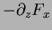
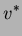
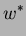
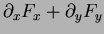
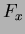
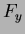
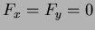
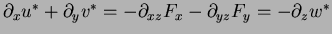
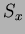
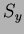

Next: Griffies Skew Flux
Up: gmredi
Previous: Redi scheme: Isopycnal diffusion
The GM parameterization aims to parameterise the ``advective'' or
``transport'' effect of geostrophic eddies by means of a ``bolus''
velocity,  . The divergence of this advective flux is added
to the tracer tendency equation (on the rhs):
. The divergence of this advective flux is added
to the tracer tendency equation (on the rhs):
The bolus velocity is defined as:
 |
 |
 |
(5) |
|  |
|
 |
(6) |
|  |
|
 |
(7) |
where  and  are stream-functions with boundary conditions
 on upper and lower boundaries. The virtue of casting the
bolus velocity in terms of these stream-functions is that they are
automatically non-divergent (
). and
are specified in terms of the isoneutral slopes  and :
This is the form of the GM parameterization as applied by Donabasaglu,
1997, in MOM versions 1 and 2.
Subsections
Next: Griffies Skew Flux
Up: gmredi
Previous: Redi scheme: Isopycnal diffusion
chris
2001-05-20